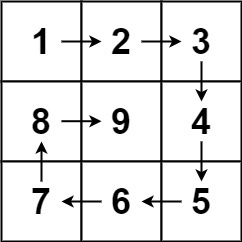
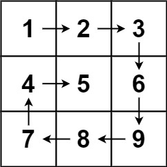
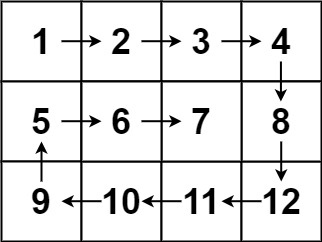
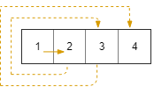
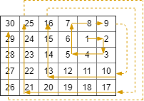
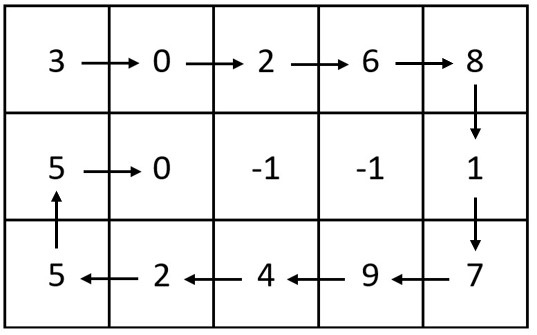
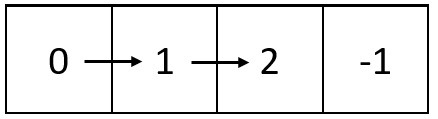

有序数组的平方
力扣链接
给你一个按 非递减顺序 排序的整数数组 nums，返回 每个数字的平方 组成的新数组，要求也按 非递减顺序 排序。
示例 1：
输入：nums = [-4,-1,0,3,10]
输出：[0,1,9,16,100]
解释：平方后，数组变为 [16,1,0,9,100]
排序后，数组变为 [0,1,9,16,100]
示例 2：
输入：nums = [-7,-3,2,3,11]
输出：[4,9,9,49,121]
解答
数组其实是有序的， 只不过负数平方之后可能成为最大数了。
那么数组平方的最大值就在数组的两端，不是最左边就是最右边，不可能是中间。
此时可以考虑双指针法了，i指向起始位置，j指向终止位置。
定义一个新数组ans，和A数组一样的大小，让cnt指向ans数组终止位置。
如果A[i] * A[i] < A[j] * A[j] 那么ans[cnt--] = A[j] * A[j]; 。
如果A[i] * A[i] >= A[j] * A[j] 那么ans[cnt--] = A[i] * A[i]; 。
边界位置需要考虑 i 和 j 相等，不然容易落下这个元素
func sortedSquares(nums []int) []int {
ans := make([]int, len(nums))
i, j, cnt := 0, len(nums)-1, len(nums)-1
for i <= j {
if nums[j]*nums[j] >= nums[i]*nums[i] {
ans[cnt] = nums[j] * nums[j]
j--
} else {
ans[cnt] = nums[i] * nums[i]
i++
}
cnt--
}
return ans
}
合并两个有序数组
力扣链接
给你两个按 非递减顺序 排列的整数数组 nums1 和 nums2，另有两个整数 m 和 n ，分别表示 nums1 和 nums2 中的元素数目。
请你 合并 nums2 到 nums1 中，使合并后的数组同样按 非递减顺序 排列。
注意：最终，合并后数组不应由函数返回，而是存储在数组 nums1 中。为了应对这种情况，nums1 的初始长度为 m + n，其中前 m 个元素表示应合并的元素，后 n 个元素为 0 ，应忽略。nums2 的长度为 n 。
解答
使用i作为nums1的边界，j作为nums2的边界，k表示填充的nums1的下标位置，
因为数组是有序的，最大的数肯定在数组的最右边，采用逆序遍历，边界问题需要考虑，就是nums1一个元素不取的情况，所以遍历结束后，需要考虑边界条件
func merge(nums1 []int, m int, nums2 []int, n int) {
i, j, k := m-1, n-1, m + n -1
for i >= 0 && j >= 0 {
if nums2[j] >= nums1[i] {
nums1[k] = nums2[j]
j--
} else {
nums1[k] = nums1[i]
i--
}
k--
}
for j >= 0 {
nums1[k] = nums2[j]
j--
k--
}
}
有序转化数组
力扣链接
给你一个已经 排好序 的整数数组 nums 和整数 a 、 b 、 c 。对于数组中的每一个元素 nums[i] ，计算函数值 f(x) = ax2 + bx + c ，请 按升序返回数组 。
示例 1：
输入: nums = [-4,-2,2,4], a = 1, b = 3, c = 5
输出: [3,9,15,33]
示例 2：
输入: nums = [-4,-2,2,4], a = -1, b = 3, c = 5
输出: [-23,-5,1,7]
解答
数组其实是有序的， 只不过负数平方之后可能成为最大数了。
那么数组平方的最大值就在数组的两端，不是最左边就是最右边，不可能是中间。
此时可以考虑双指针法了，i指向起始位置，j指向终止位置。
定义一个新数组ans，和A数组一样的大小，让k指向ans数组终止位置。
如果a * A[i] * A[i] + b * A[i] + c < A[j] * A[j] + b * A[j] + c 那么ans[k--] = A[j] * A[j] + b * A[j] + c; 。
如果a * A[i] * A[i] + b * A[i] + c < A[j] * A[j] + b * A[j] + c 那么ans[k--] = a * A[i] * A[i] + b * A[i] + c; 。
边界位置需要考虑 i 和 j 相等，不然容易落下这个元素
func sortTransformedArray(nums []int, a int, b int, c int) []int {
i, j, k := 0, len(nums)-1, len(nums)-1
ans := make([]int, len(nums))
if a < 0 {
k = 0
}
for i <= j {
left, right := a*nums[i]*nums[i]+b*nums[i]+c, a*nums[j]*nums[j]+b*nums[j]+c
if a >= 0 {
if left < right {
ans[k] = right
j--
} else {
ans[k] = left
i++
}
k--
} else {
if left < right {
ans[k] = left
i++
} else {
ans[k] = right
j--
}
k++
}
}
return ans
}
长度最小的子数组
力扣链接
给定一个含有 n 个正整数的数组和一个正整数 target 。
找出该数组中满足其总和大于等于 target 的长度最小的
子数组
[numsl, numsl+1, ..., numsr-1, numsr] ，并返回其长度。如果不存在符合条件的子数组，返回 0 。
示例 1：
输入：target = 7, nums = [2,3,1,2,4,3]
输出：2
解释：子数组 [4,3] 是该条件下的长度最小的子数组。
示例 2：
输入：target = 4, nums = [1,4,4]
输出：1
示例 3：
输入：target = 11, nums = [1,1,1,1,1,1,1,1]
输出：0
解答
- 先对数组进行排序
- 使用双指针，一个指向头部，一个指向滑动窗口的终止位置
- 两个指针向中间移动
- 遇到和大于target的数组就放入集合中,这里使用for来判断，直到条件不满足才退出
- 随着指针的移动逐渐缩小数组长度
func minSubArrayLen(target int, nums []int) int {
i, sum, ans := 0, 0, math.MaxInt64
for j := 0; j < len(nums); j++ {
sum += nums[j]
for sum >= target {
ans = min(ans, j - i + 1)
sum -= nums[i]
i++
}
}
if ans == math.MaxInt64 {
return 0
}
return ans
}
螺旋矩阵
力扣链接
给你一个正整数 n ，生成一个包含 1 到 n2 所有元素，且元素按顺时针顺序螺旋排列的 n x n 正方形矩阵 matrix 。
示例 1：

输入：n = 3
输出：[[1,2,3],[8,9,4],[7,6,5]]
示例 2：
输入：n = 1
输出：[[1]]
解答
n = 6 时候，完成一圈是
| 1 |
1 |
1 |
1 |
1 |
1 |
| 1 |
|
|
|
|
1 |
| 1 |
|
|
|
|
1 |
| 1 |
|
|
|
|
1 |
| 1 |
|
|
|
|
1 |
| 1 |
1 |
1 |
1 |
1 |
1 |
未完成遍历的部分size 为 4
完成一圈，剩余 size 为 2
再完成一圈遍历，
- 每减少一圈，size 都 -2，n需要 n/2 次，size 可变为 0
- 因为每一圈起始的位置都不一样，所以startX 和startY 都要变动
- 每次遍历的边界都会缩减 1
func generateMatrix(n int) [][]int {
ans := make([][]int, n)
for i := 0; i < n ; i++ {
ans[i] = make([]int, n)
}
count, startX, startY, offset := 1, 0, 0, 1
loop := n / 2
for loop > 0 {
i, j := startX, startY
for ; j < n - offset; j++ {
ans[i][j] = count
count++
}
for ; i < n - offset; i++ {
ans[i][j] = count
count++
}
for ; j > startY; j-- {
ans[i][j] = count
count++
}
for ; i > startX; i-- {
ans[i][j] = count
count++
}
startX++
startY++
offset++
loop--
}
if n % 2 == 1 {
ans[n/2][n/2] = count
}
return ans
}
螺旋矩阵
力扣链接
给你一个 m 行 n 列的矩阵 matrix ，请按照 顺时针螺旋顺序 ，返回矩阵中的所有元素。

输入：matrix = [[1,2,3],[4,5,6],[7,8,9]]
输出：[1,2,3,6,9,8,7,4,5]

输入：matrix = [[1,2,3,4],[5,6,7,8],[9,10,11,12]]
输出：[1,2,3,4,8,12,11,10,9,5,6,7]
解答
- loop的取值是行列最小值/2
- 如果行列最小值是奇数，需要处理转圈结束后剩余的元素
如果m > n, 剩余元素个数就是 m - offset + 1 - mid
如果m < n, 剩余元素个数就是 n - offset + 1 - mid
func spiralOrder(matrix [][]int) []int {
m, n := len(matrix), len(matrix[0])
loop := min(m, n) / 2
ans := make([]int, m*n)
startX, startY, offset, count := 0, 0, 1, 0
for loop > 0 {
i, j := startX, startY
for ; j < n-offset; j++ {
ans[count] = matrix[i][j]
count++
}
for ; i < m-offset; i++ {
ans[count] = matrix[i][j]
count++
}
for ; j > startY; j-- {
ans[count] = matrix[i][j]
count++
}
for ; i > startX; i-- {
ans[count] = matrix[i][j]
count++
}
startX++
startY++
offset++
loop--
}
mid := min(m, n) / 2
if min(m, n)%2 == 1 {
if m < n {
for i := mid; i < n-offset + 1; i++ {
ans[count] = matrix[mid][i]
count++
}
} else {
for i := mid; i < m-offset + 1; i++ {
ans[count] = matrix[i][mid]
count++
}
}
}
return ans
}
拓展训练
在 rows x cols 的网格上，你从单元格 (rStart, cStart) 面朝东面开始。网格的西北角位于第一行第一列，网格的东南角位于最后一行最后一列。
你需要以顺时针按螺旋状行走，访问此网格中的每个位置。每当移动到网格的边界之外时，需要继续在网格之外行走（但稍后可能会返回到网格边界）。
最终，我们到过网格的所有 rows x cols 个空间。
按照访问顺序返回表示网格位置的坐标列表。

输入：rows = 1, cols = 4, rStart = 0, cStart = 0
输出：[[0,0],[0,1],[0,2],[0,3]]

输入：rows = 5, cols = 6, rStart = 1, cStart = 4
输出：[[1,4],[1,5],[2,5],[2,4],[2,3],[1,3],[0,3],[0,4],[0,5],[3,5],[3,4],[3,3],[3,2],[2,2],[1,2],[0,2],[4,5],[4,4],[4,3],[4,2],[4,1],[3,1],[2,1],[1,1],[0,1],[4,0],[3,0],[2,0],[1,0],[0,0]]
// 885. Spiral Matrix III
// 885. 螺旋矩阵 III
// 思路：模拟
func spiralMatrixIII(R int, C int, r0 int, c0 int) [][]int {
// Examining the lengths of our walk in each direction,
// we find the following pattern: 1, 1, 2, 2, 3, 3, 4, 4, ...
// That is, we walk 1 unit right, then 1 unit bottom,
// then 2 units left, then 2 units top, etc.
count := 0
total := R * C
answer := make([][]int, 0, total)
answer = append(answer, []int{r0, c0})
count++
// number of step should go in each direction
distances := 1
for count < total {
// move right
for i := 1; i <= distances; i++ {
c0++
takeIt(&answer, &count, r0, c0, R, C)
}
// move bottom
for i := 1; i <= distances; i++ {
r0++
takeIt(&answer, &count, r0, c0, R, C)
}
distances++ // turn twice direction, distances + 1
// move left
for i := 1; i <= distances; i++ {
c0--
takeIt(&answer, &count, r0, c0, R, C)
}
// move top
for i := 1; i <= distances; i++ {
r0--
takeIt(&answer, &count, r0, c0, R, C)
}
distances++
}
return answer
}
func takeIt(answer *[][]int, count *int, r0, c0, R, C int) {
if !isOk(r0, c0, R, C) {
return
}
*answer = append(*answer, []int{r0, c0})
*count++
}
func isOk(r0, c0, R, C int) bool {
return 0 <= r0 && r0 < R && 0 <= c0 && c0 < C
}
螺旋矩阵IV
给你两个整数：m 和 n ，表示矩阵的维数。
另给你一个整数链表的头节点 head 。
请你生成一个大小为 m x n 的螺旋矩阵，矩阵包含链表中的所有整数。链表中的整数从矩阵 左上角 开始、顺时针 按 螺旋 顺序填充。如果还存在剩余的空格，则用 -1 填充。
返回生成的矩阵。

输入：m = 3, n = 5, head = [3,0,2,6,8,1,7,9,4,2,5,5,0]
输出：[[3,0,2,6,8],[5,0,-1,-1,1],[5,2,4,9,7]]
解释：上图展示了链表中的整数在矩阵中是如何排布的。
注意，矩阵中剩下的空格用 -1 填充。

输入：m = 1, n = 4, head = [0,1,2]
输出：[[0,1,2,-1]]
解释：上图展示了链表中的整数在矩阵中是如何从左到右排布的。
注意，矩阵中剩下的空格用 -1 填充。
var dirs = []struct{ x, y int }{{0, 1}, {1, 0}, {0, -1}, {-1, 0}} // 右下左上
func spiralMatrix(n int, m int, head *ListNode) [][]int {
ans := make([][]int, n)
for i := range ans {
ans[i] = make([]int, m)
for j := range ans[i] {
ans[i][j] = -1
}
}
for x, y, di := 0, 0, 0; head != nil; head = head.Next {
ans[x][y] = head.Val
d := dirs[di&3]
if xx, yy := x+d.x, y+d.y; xx < 0 || xx >= n || yy < 0 || yy >= m || ans[xx][yy] != -1 {
di++
d = dirs[di&3]
}
x += d.x
y += d.y
}
return ans
}